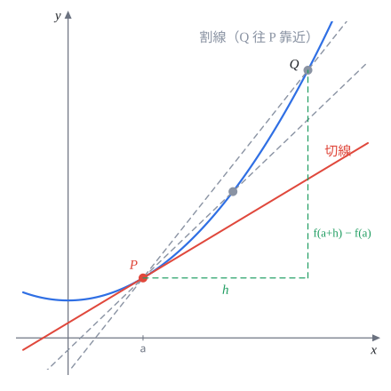
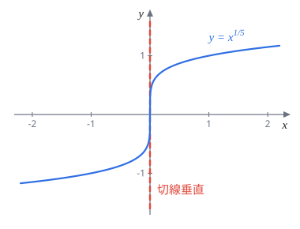
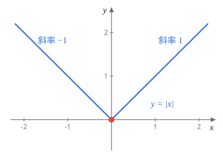
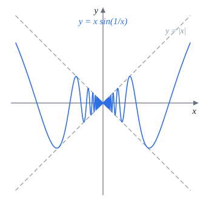
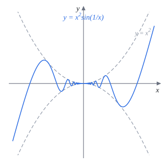
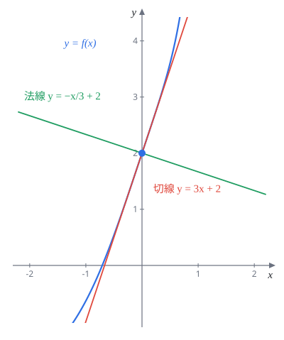

Week 4 微分 I（Differentiation I）
AP Calculus I（115 學年）Lecture Note 4 教學與題解
講義筆誤讀講義時請自己改正兩處：
- p.22 Remark：$x^2\sin\frac1x$ 的導數是 $f'(x)=2x\sin\frac1x-\cos\frac1x$，講義誤寫成 $-\sin\frac1x$。
- p.30 最後的歸納法題：$\left(\frac{1}{1+x}\right)^{(n)}$ 的分母應為 $(1+x)^{n+1}$，講義誤寫成 $(1+x)^n$。
4.1 導數的定義
導數就是切線斜率，也就是瞬間變化率。在 $x=a$ 旁邊取一點 $a+h$，兩點連成割線，割線斜率叫做差商：
$$\frac{f(a+h)-f(a)}{h}$$讓 $h\to0$，$Q$ 點沿著曲線往 $P$ 靠近，割線就轉成切線。

定義 4.1.1（導數）
$$f'(a) := \lim_{h\to0}\frac{f(a+h)-f(a)}{h}$$這個極限存在而且是一個有限的實數，才說 $f$ 在 $x=a$ 可微（differentiable）。
- 把 $a$ 換成變數 $x$，就得到導函數 $f'(x)$。
- 若 $y=f(x)$，導數也寫作 $\dfrac{dy}{dx}$。
不可微的三種情況
- 差商極限為 $\pm\infty$：垂直切線
- 左極限 $\neq$ 右極限：尖點
- 差商震盪，極限不存在
4.2 不可微的函數


題 1證明 $f(x)=x^{1/5}$ 在 $x=0$ 不可微。
分母恆正且趨近 $0$，極限為 $+\infty$，不是一個數，所以不可微（原點切線垂直）。
$x\neq0$ 時用冪次法則：$f'(x)=\frac15x^{-4/5}$。
題 2證明 $f(x)=|x|$ 在 $x=0$ 不可微。
差商為 $\dfrac{|h|}{h}$：
$$\lim_{h\to0^+}\frac{h}{h}=1,\qquad \lim_{h\to0^-}\frac{-h}{h}=-1$$左右極限不相等，極限不存在，不可微（原點是尖點）。
題 1、題 2 的函數在 $0$ 都連續，卻不可微：連續不一定可微。
題 3設 $f(x)=\begin{cases}x^2, & x\ge0\\ -x, & x\lt0\end{cases}$。(a) 證明 $f$ 連續；(b) 證明 $f'(0)$ 不存在。
(a) $x\neq0$ 時兩段都是多項式，連續。在 $x=0$：
$$\lim_{x\to0^+}x^2=0,\qquad \lim_{x\to0^-}(-x)=0,\qquad f(0)=0$$三者相等，所以在 $0$ 也連續。
(b) 看差商 $\dfrac{f(h)-f(0)}{h}$ 的左右極限：
$$\lim_{h\to0^+}\frac{h^2}{h}=0,\qquad \lim_{h\to0^-}\frac{-h}{h}=-1$$$0\neq-1$，$f'(0)$ 不存在。
題 4$f$ 對所有 $x,y\in\mathbb R$ 滿足 $f(x+y)=f(x)+f(y)+2xy$，且 $f'(0)=1$。求 $f(0)$ 與 $f'(a)$。
求 $f(0)$：代 $x=y=0$，得 $f(0)=2f(0)$，所以 $f(0)=0$。
求 $f'(a)$：用題目條件拆開 $f(a+h)$：
$$f(a+h)-f(a)=\bigl[f(a)+f(h)+2ah\bigr]-f(a)=f(h)+2ah$$ $$f'(a)=\lim_{h\to0}\frac{f(h)+2ah}{h}=\lim_{h\to0}\frac{f(h)-f(0)}{h}+2a=f'(0)+2a$$$f(0)=0,\quad f'(a)=2a+1$
函數方程題套路先代 $0$ 求 $f(0)$，再用定義把 $f(a+h)$ 拆開，湊出 $f'(0)$。


題 5設 $f(x)=\begin{cases}x\sin\frac1x, & x\neq0\\ 0, & x=0\end{cases}$，證明 $f$ 在 $x=0$ 不可微。
$h\to0$ 時 $\frac1h\to\pm\infty$，$\sin\frac1h$ 在 $-1$ 到 $1$ 之間無限震盪，極限不存在，不可微。
註：它在 $0$ 是連續的，因為 $\left|x\sin\frac1x\right|\le|x|\to0$。
題 6設 $f(x)=\begin{cases}x^2\sin\frac1x, & x\neq0\\ 0, & x=0\end{cases}$。
(a) $f$ 在 $0$ 連續嗎？(b) 可微嗎？求 $f'(0)$。(c) 求 $x\neq0$ 時的 $f'(x)$，並證明 $f'$ 在 $0$ 不連續。
(a) $-x^2\le x^2\sin\frac1x\le x^2$，兩邊都趨近 $0$，由夾擠定理極限為 $0=f(0)$，連續。
(b) 差商為
$$\frac{h^2\sin\frac1h-0}{h}=h\sin\frac1h,\qquad -|h|\le h\sin\frac1h\le|h|$$夾擠得極限為 $0$，所以可微，$f'(0)=0$。
(c) $x\neq0$ 時用積法則與連鎖律（4.5、4.8 節）：
$$f'(x)=2x\sin\frac1x+x^2\cos\frac1x\cdot\left(-\frac{1}{x^2}\right)=2x\sin\frac1x-\cos\frac1x$$$x\to0$ 時 $2x\sin\frac1x\to0$，但 $\cos\frac1x$ 震盪不存在，所以 $\lim_{x\to0}f'(x)$ 不存在，$f'$ 在 $0$ 不連續。
題 6 說明：$f$ 處處可微，$f'$ 卻可以不連續。這引出下面的 Darboux 定理。
4.2.1 Darboux 定理（*）
定理 4.2.1（Darboux）$f:[a,b]\to\mathbb R$ 可微，則 $f'$ 具有中間值性質：對 $f'(a)$ 與 $f'(b)$ 之間的任何 $k$，存在 $c\in[a,b]$ 使 $f'(c)=k$。
厲害之處在於：中間值定理需要函數連續，但 $f'$ 不一定連續（題 6），卻依然有這個性質。
證明想法：設 $f'(b)\lt k\lt f'(a)$，令 $\varphi(x)=f(x)-kx$。
- $\varphi'(a)=f'(a)-k\gt0$：從 $a$ 往右是上升的，$a$ 不是最大值點。
- $\varphi'(b)=f'(b)-k\lt0$：$b$ 的左邊比 $b$ 高，$b$ 也不是最大值點。
- $\varphi$ 連續，在 $[a,b]$ 必有最大值（極值定理），只能在內部某點 $c$ 取得。
- 內部極值點導數為 $0$（Fermat 定理）：$\varphi'(c)=0$，即 $f'(c)=k$。
題 7$f,g:\mathbb R\to\mathbb R$ 連續，$g$ 可微，且 $\bigl(f(0)-g'(0)\bigr)\bigl(f(1)-g'(1)\bigr)\lt0$。證明存在 $c\in(0,1)$ 使 $f(c)=g'(c)$。
直覺是對 $f-g'$ 用中間值定理，但 $g'$ 不一定連續，不能直接用。改令
$$h(x)=\int_0^x f(s)\,ds-g(x)$$由微積分基本定理（之後會學）$h'(x)=f(x)-g'(x)$，$h$ 在 $[0,1]$ 可微。
條件說 $h'(0)h'(1)\lt0$，即 $h'(0)$、$h'(1)$ 一正一負，$0$ 介於兩者之間。由 Darboux 定理，存在 $c\in(0,1)$ 使 $h'(c)=0$，也就是 $f(c)=g'(c)$。
4.3 用定義求導數
兩個必背極限
$$\lim_{h\to0}\frac{\sin h}{h}=1,\qquad \lim_{h\to0}\frac{\cos h-1}{h}=0$$題 8用定義求 $(\sin x)'$。
和角公式 $\sin(x+h)=\sin x\cos h+\cos x\sin h$：
$$\begin{aligned} \frac{\sin(x+h)-\sin x}{h} &= \sin x\cdot\frac{\cos h-1}{h}+\cos x\cdot\frac{\sin h}{h} \\ &\longrightarrow \sin x\cdot0+\cos x\cdot1 \end{aligned}$$$(\sin x)'=\cos x$
題 9用定義求 $(\cos x)'$。
Step 1（證明第二個必背極限）上下同乘 $1+\cos x$：
$$\begin{aligned} \lim_{x\to0}\frac{1-\cos x}{x} &= \lim_{x\to0}\frac{\sin^2x}{x(1+\cos x)} \\ &= \lim_{x\to0}\frac{\sin x}{x}\cdot\lim_{x\to0}\frac{\sin x}{1+\cos x} \\ &= 1\cdot\frac02= 0 \end{aligned}$$Step 2 和角公式 $\cos(x+h)=\cos x\cos h-\sin x\sin h$：
$$\frac{\cos(x+h)-\cos x}{h}=\cos x\cdot\frac{\cos h-1}{h}-\sin x\cdot\frac{\sin h}{h}\;\longrightarrow\;-\sin x$$$(\cos x)'=-\sin x$
定理 4.3.2（常數倍）$\bigl(cf(x)\bigr)'=cf'(x)$。常數在極限裡可以直接提出去。
定理 4.3.3（冪次法則）$(x^n)'=nx^{n-1}$。事實上對任意實數 $a$ 都有 $(x^a)'=ax^{a-1}$；常數函數的導數為 $0$。
證明（$n$ 為正整數）用二項式展開：
$$\begin{aligned} \frac{(x+h)^n-x^n}{h} &= \frac{\binom n1x^{n-1}h+\binom n2x^{n-2}h^2+\cdots+h^n}{h} \\ &= \binom n1x^{n-1}+\underbrace{\binom n2x^{n-2}h+\cdots+h^{n-1}}_{\text{都帶 }h\text{，趨近 }0} \end{aligned}$$$h\to0$ 後只剩 $nx^{n-1}$。
4.4 $e^x$ 的導數、可微必連續
$e$ 的定義：$y=e^x$ 在 $(0,1)$ 的切線斜率恰好為 $1$。而 $\dfrac{e^h-1}{h}$ 正是過 $(0,1)$ 與 $(h,e^h)$ 的割線斜率，所以
定理 4.4.1$\displaystyle\lim_{h\to0}\frac{e^h-1}{h}=1$
定理 4.4.2$(e^x)'=e^x$
定理 4.4.3$f$ 在 $x=a$ 可微 $\Longrightarrow$ $f$ 在 $x=a$ 連續。
所以 $\lim_{x\to a}f(x)=f(a)$。反過來不成立，$|x|$ 就是反例。
題 10設 $f(x)=\begin{cases}a\cos x, & x\gt0\\ 2, & x\le0\end{cases}$，已知 $f$ 在 $x=0$ 可微，求 $a$ 與 $f'(0)$。
Step 1：用連續求 $a$。可微必連續，右極限要等於 $f(0)$：
$$\lim_{x\to0^+}a\cos x=a=f(0)=2\quad\Longrightarrow\quad a=2$$Step 2：求 $f'(0)$。
$$\lim_{h\to0^+}\frac{2\cos h-2}{h}=2\cdot0=0,\qquad \lim_{h\to0^-}\frac{2-2}{h}=0$$$a=2,\quad f'(0)=0$
分段函數求參數套路先用連續列一條方程，再用左右導數相等列一條方程。
4.5 和、差、積、商法則
定理 4.5.1$f,g$ 可微，則
$$\begin{aligned} (f\pm g)' &= f'\pm g' \\[4pt] (fg)' &= f'g+fg' \\[4pt] \left(\frac fg\right)' &= \frac{f'g-fg'}{g^2}\quad(g\neq0) \end{aligned}$$商法則口訣：上微下不微，減去下微上不微，除以下平方。
題 11$y=x^{e^2}\cdot e^x$，求 $\dfrac{dy}{dx}$。
$e^2$ 只是常數，冪次法則照用，再配積法則：
$$\frac{dy}{dx}=e^2x^{e^2-1}\cdot e^x+x^{e^2}\cdot e^x=x^{e^2-1}e^x\left(e^2+x\right)$$題 12證明 $(\tan x)'=\sec^2x$。
題 13證明 $(\sec x)'=\sec x\tan x$。
題 14證明 $(\cot x)'=-\csc^2x$。
同理 $(\csc x)'=\left(\dfrac{1}{\sin x}\right)'=-\dfrac{\cos x}{\sin^2x}=-\csc x\cot x$。
記憶法c 開頭的三個（$\cos,\cot,\csc$）導數都帶負號。
4.5.1 切線與法線
在 $x=a$：
$$\text{切線：}\;y=f'(a)(x-a)+f(a),\qquad \text{法線斜率}=-\frac{1}{f'(a)}$$題 15$f(x)=x^4e^x+3x+2$。(a) 求 $f'(x)$；(b) 求 $x=0$ 的切線；(c) 求 $x=0$ 的法線。
(a) $f'(x)=4x^3e^x+x^4e^x+3$（第一項用積法則）
(b) $f(0)=2$，$f'(0)=3$，切線 $y=3x+2$
(c) 法線斜率 $-\frac13$，法線 $y=-\frac13x+2$

題 16求 $f(x)=\dfrac{4-x^3}{x+2x^2}$ 在 $x=1$ 的切線與法線。
$f(1)=\dfrac{3}{3}=1$。商法則（分子導數 $-3x^2$，分母導數 $1+4x$）：
$$f'(x)=\frac{-3x^2(x+2x^2)-(4-x^3)(1+4x)}{(x+2x^2)^2}$$ $$f'(1)=\frac{-3\cdot3-3\cdot5}{9}=-\frac{24}{9}=-\frac83$$切線 $y=-\frac83(x-1)+1$，法線 $y=\frac38(x-1)+1$
題 17求 $f(x)=\tan x+9\cos x$ 在 $x=\pi$ 的切線與法線。
$f(\pi)=0+9(-1)=-9$；$f'(x)=\sec^2x-9\sin x$，$f'(\pi)=\dfrac{1}{(-1)^2}-0=1$。
切線 $y=x-\pi-9$，法線 $y=-x+\pi-9$
4.5.2 積商法則的證明（講義標示不考）
積法則的關鍵技巧是在中間加一項再減一項 $f(x+h)g(x)$：
$$\begin{aligned} \frac{f(x+h)g(x+h)-f(x)g(x)}{h} &= f(x+h)\cdot\frac{g(x+h)-g(x)}{h}+g(x)\cdot\frac{f(x+h)-f(x)}{h} \end{aligned}$$取極限即得 $fg'+gf'$（用到可微必連續：$f(x+h)\to f(x)$）。商法則同理，加減 $f(x)g(x)$。
4.6 導數表（Part I）
| $f(x)$ | $f'(x)$ | $f(x)$ | $f'(x)$ |
|---|---|---|---|
| $c$ | $0$ | $\csc x$ | $-\csc x\cot x$ |
| $x^k$ | $kx^{k-1}$ | $\sec x$ | $\sec x\tan x$ |
| $\sin x$ | $\cos x$ | $\cot x$ | $-\csc^2x$ |
| $\cos x$ | $-\sin x$ | ||
| $\tan x$ | $\sec^2x$ | ||
| $e^x$ | $e^x$ |
4.7 高階導數
定義 4.7.1$f''(x)=\dfrac{d^2}{dx^2}f(x)$ 是 $f'$ 的導數；$f^{(n)}(x)=\dfrac{d^n}{dx^n}f(x)$ 是 $f^{(n-1)}$ 的導數。
題 18$f(x)=\sin x$，求 $f'$、$f''$、$f'''$、$f^{(4)}$、$f^{(2023)}$。
每 4 次循環一輪。$2023=4\cdot505+3$，所以 $f^{(2023)}=f'''=-\cos x$。
題 19利用 Leibniz 公式 $\displaystyle(fg)^{(n)}=\sum_{k=0}^{n}\binom nk f^{(k)}g^{(n-k)}$，求 $(x\cos x)^{(112)}$。
取 $f=x$，它微兩次就變 $0$，所以只剩 $k=0,1$ 兩項：
$$(x\cos x)^{(112)}=x\cdot(\cos x)^{(112)}+\binom{112}{1}\cdot1\cdot(\cos x)^{(111)}$$$\cos x$ 的循環：微 0 次 $\cos x$、1 次 $-\sin x$、2 次 $-\cos x$、3 次 $\sin x$。
$112$ 除以 $4$ 餘 $0$ 得 $\cos x$；$111$ 除以 $4$ 餘 $3$ 得 $\sin x$。
$(x\cos x)^{(112)}=x\cos x+112\sin x$
題 20$f(x)=x^{2024}$，求 $f^{(2022)}$、$f^{(2023)}$、$f^{(2024)}$、$f^{(2025)}$。
微 $k$ 次後：$f^{(k)}(x)=\dfrac{2024!}{(2024-k)!}x^{2024-k}$。
$$\begin{aligned} f^{(2022)} &= \frac{2024!}{2}x^2 \\[4pt] f^{(2023)} &= 2024!\,x \\[4pt] f^{(2024)} &= 2024! \\[4pt] f^{(2025)} &= 0 \end{aligned}$$題 21$f(x)=e^x$，求 $f^{(n)}(x)$。
怎麼微都是自己：$f^{(n)}(x)=e^x$。
題 22$f(x)=x^2e^x$，用數學歸納法證明 $f^{(n)}(x)=\bigl(x^2+2nx+n(n-1)\bigr)e^x$。
$n=1$：$f'=2xe^x+x^2e^x=(x^2+2x+0)e^x$，與公式代 $n=1$ 相同。
設 $n$ 時成立，再微一次：
$$\begin{aligned} f^{(n+1)}&=(2x+2n)e^x+\bigl(x^2+2nx+n(n-1)\bigr)e^x\\ &=\bigl(x^2+(2n+2)x+n^2+n\bigr)e^x\\ &=\bigl(x^2+2(n+1)x+(n+1)n\bigr)e^x \end{aligned}$$正是公式代 $n+1$，得證。
題 23$f(x)=\dfrac{1}{1+x}$，證明 $f^{(n)}(x)=\dfrac{(-1)^n\,n!}{(1+x)^{n+1}}$（講義分母誤植）。
寫成 $f=(1+x)^{-1}$。
$n=1$：$f'=-(1+x)^{-2}=\dfrac{(-1)^1\,1!}{(1+x)^2}$，成立。
設 $n$ 時成立：$f^{(n)}=(-1)^n n!\,(1+x)^{-(n+1)}$，再微一次：
$$f^{(n+1)}=(-1)^n n!\cdot\bigl(-(n+1)\bigr)(1+x)^{-(n+2)}=\frac{(-1)^{n+1}(n+1)!}{(1+x)^{n+2}}$$得證。
題 24$f:\mathbb R\to\mathbb R$ 連續，滿足 (i) $\displaystyle\lim_{x\to0}\frac{f(x)^2-4}{x}=2024$；(ii) $f(x+y)=\frac12f(x)f(y)$ 對所有 $x,y$ 成立。
(a) 證明 $f(0)\ge0$；(b) 求 $f(0)$、$f'(0)$；(c) 證明 $f$ 處處可微；(d) 求 $f^{(n)}(0)$，並證明 $f$ 是 $C^\infty$。
(a) 把 $x$ 拆成兩半：
$$f(x)=f\left(\tfrac x2+\tfrac x2\right)=\tfrac12f\left(\tfrac x2\right)^2\ge0$$對所有 $x$ 都成立，當然 $f(0)\ge0$。
(b) 條件 (i) 分母趨近 $0$ 而極限存在，分子必須趨近 $0$：$\lim_{x\to0}f(x)^2=4$。$f$ 連續，所以 $f(0)^2=4$，配合 (a) 得 $f(0)=2$。
求 $f'(0)$：分解平方差，
$$\frac{f(x)^2-4}{x}=\frac{f(x)-f(0)}{x}\cdot\bigl(f(x)+2\bigr)$$右邊第二個因子趨近 $4$，所以 $\dfrac{f(x)-f(0)}{x}\to\dfrac{2024}{4}$，$f'(0)=506$。
(c) 對任意 $a$：
$$\begin{aligned} \frac{f(a+h)-f(a)}{h} &= \frac{\frac12f(a)f(h)-f(a)}{h} \\ &= \frac12f(a)\cdot\frac{f(h)-2}{h} \\ &\longrightarrow \frac12f(a)\cdot506 \end{aligned}$$所以 $f'(a)=253\,f(a)$，對每個 $a$ 都存在，處處可微。
(d) $f'=253f$，再微一次 $f''=253f'=253^2f$，歸納得 $f^{(n)}=253^n f$，所以
$$f^{(n)}(0)=2\cdot253^n$$每一階導數都是 $f$ 的常數倍，而 $f$ 可微，所以永遠能再微下去，$f$ 是 $C^\infty$。
4.8 連鎖律
為什麼需要：$(2x+1)^2$ 若直接套冪次法則得 $2(2x+1)=4x+2$，但展開成 $4x^2+4x+1$ 再微分得 $8x+4$，差了一倍。原因是冪次法則的底是 $x$，不是 $2x+1$。
定理 4.8.1（連鎖律）
$$\bigl(f(g(x))\bigr)'=f'\bigl(g(x)\bigr)\cdot g'(x)$$口訣：外層微分（裡面照抄）乘以裡層微分。
驗證：$\bigl((2x+1)^2\bigr)'=2(2x+1)\cdot2=8x+4$。
定理 4.8.2（一般指數）$a\gt0$ 時，$\dfrac{d}{dx}a^x=a^x\ln a$。
題 25微分 $f(x)=(2x+3)^{2024}$。
題 26微分 $f(x)=\dfrac{1}{\sqrt{1+2x+\sin x}}$。
寫成 $(1+2x+\sin x)^{-1/2}$：
$$\begin{aligned} f'(x) &= -\frac12(1+2x+\sin x)^{-3/2}\cdot(2+\cos x) \\ &= -\frac{2+\cos x}{2(1+2x+\sin x)^{3/2}} \end{aligned}$$題 27微分 $f(x)=\sin(x^2)$ 與 $g(x)=\sin^2x$（注意兩者不同）。
$\sin(x^2)$：外層 $\sin$，裡層 $x^2$。
$$f'(x)=\cos(x^2)\cdot2x=2x\cos(x^2)$$$\sin^2x=(\sin x)^2$：外層平方，裡層 $\sin$。
$$g'(x)=2\sin x\cdot\cos x=\sin2x$$題 28微分 $f(x)=e^{\tan\sqrt x}$。
三層：$e^{\square}$、$\tan\square$、$\sqrt x$，由外往內一層一層剝：
$$f'(x)=e^{\tan\sqrt x}\cdot\sec^2\sqrt x\cdot\frac{1}{2\sqrt x}$$題 29定義 $\sinh x=\dfrac{e^x-e^{-x}}{2}$，$\cosh x=\dfrac{e^x+e^{-x}}{2}$，$\tanh x=\dfrac{\sinh x}{\cosh x}$，$\operatorname{sech}x=\dfrac{1}{\cosh x}$。證明 $\dfrac{d}{dx}\tanh x=1-\tanh^2x=\operatorname{sech}^2x$。
連鎖律 $(e^{-x})'=e^{-x}\cdot(-1)=-e^{-x}$，所以
$$(\sinh x)'=\frac{e^x+e^{-x}}{2}=\cosh x,\qquad (\cosh x)'=\frac{e^x-e^{-x}}{2}=\sinh x$$商法則：
$$(\tanh x)'=\frac{\cosh x\cdot\cosh x-\sinh x\cdot\sinh x}{\cosh^2x}=1-\tanh^2x$$又
$$\cosh^2x-\sinh^2x=\frac{(e^x+e^{-x})^2-(e^x-e^{-x})^2}{4}=\frac44=1$$所以上式也等於 $\dfrac{1}{\cosh^2x}=\operatorname{sech}^2x$。
題 30求 $\displaystyle\lim_{x\to0}\frac{(x+4)^{3/2}+e^x-9}{x}$。
令 $f(x)=(x+4)^{3/2}+e^x$，則 $f(0)=8+1=9$。所求極限長得像導數定義，反過來用：
$$\lim_{x\to0}\frac{f(x)-f(0)}{x-0}=f'(0)$$ $$f'(x)=\frac32(x+4)^{1/2}+e^x,\qquad f'(0)=\frac32\cdot2+1=4$$答案：$4$
| 導數表（Part II） | |
|---|---|
| $f(x)$ | $f'(x)$ |
| $e^x$ | $e^x$ |
| $a^x$ | $a^x\ln a$ |
本週必背總整理
- 導數定義：$f'(a)=\displaystyle\lim_{h\to0}\frac{f(a+h)-f(a)}{h}$
- 不可微三型：垂直切線、尖點、震盪
- 可微 $\Rightarrow$ 連續，反之不成立
- 導數表（Part I、Part II）
- 積法則、商法則、連鎖律
- 三種常考題型：分段函數求參數（先連續再導數）、函數方程（代 $0$ 再用定義）、極限長得像差商就是導數